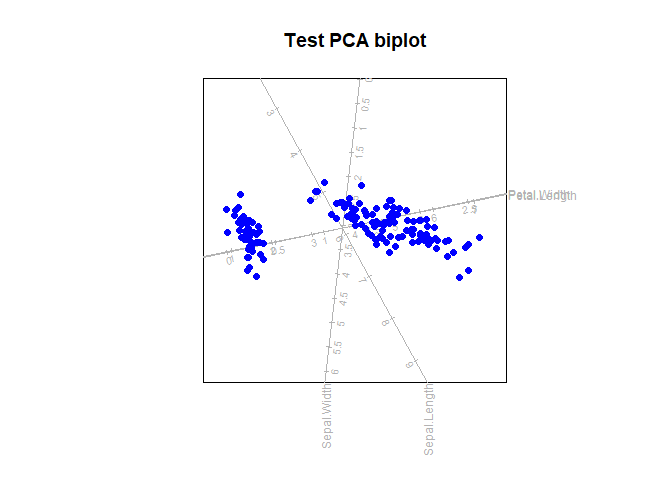
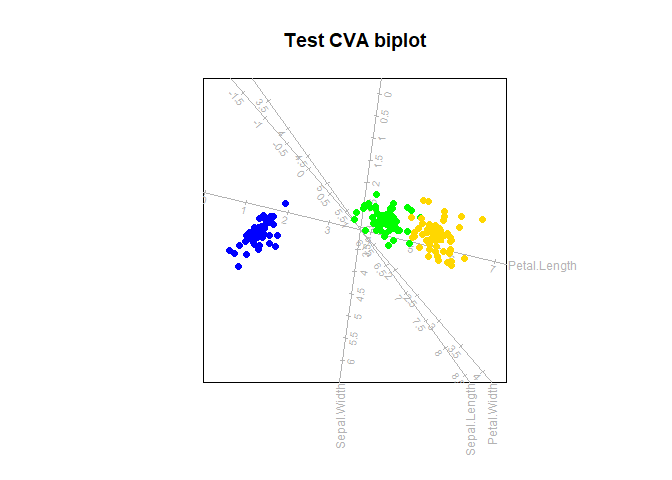
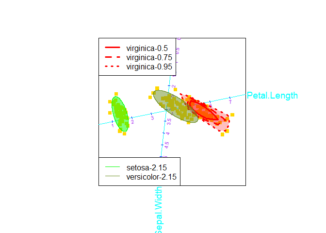
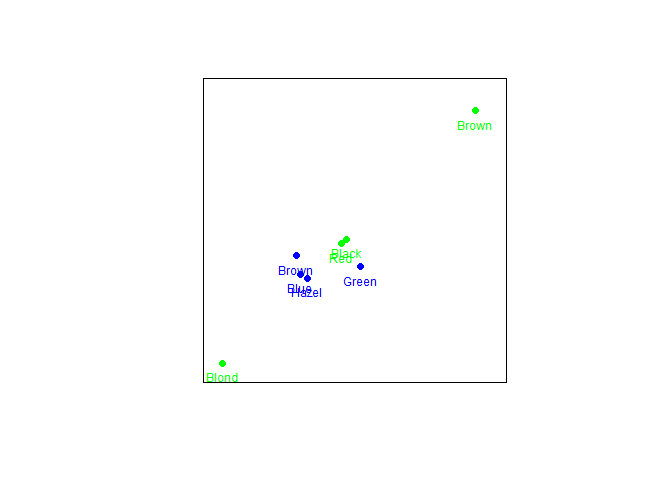
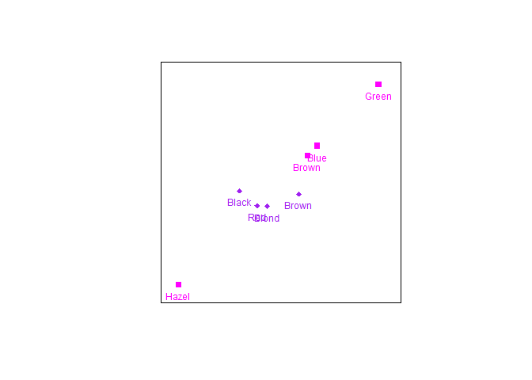

The goal of biplotEZ is to provide users an EZ-to-use platform for visually representing their data with biplots. Currently, this package includes principal component analysis (PCA) and canonical variate analysis (CVA) biplots. This is accompanied by various formatting options for the samples and axes. Alpha-bags and concentration ellipses are included for visual enhancements and interpretation.
Installation
You can install the development version of biplotEZ like this:
library(devtools)
devtools::install_github("MuViSU/biplotEZ")Example
This is a basic example which shows you how to construct a PCA biplot:
library(biplotEZ)
#>
#> Attaching package: 'biplotEZ'
#> The following object is masked from 'package:stats':
#>
#> biplot
biplot (iris[,1:4], Title="Test PCA biplot") |> PCA() |> plot()
While the PCA biplot provides a visual representation of the overall data set, optimally representing the variance in 1, 2 or 3 dimensions, the CVA biplot aims to optimally separate specified groups in the data. This is a basic example which shows you how to construct a CVA biplot:

An over-the-top example of changing all the formatting and adding all the bells and whistles:
biplot (iris[,1:4], group.aes=iris[,5]) |> PCA() |>
samples(col="gold", pch=15) |>
axes(which=2:3, col="cyan", label.cex=1.2, tick.col="blue",
tick.label.col="purple") |>
alpha.bags (alpha=c(0.5,0.75,0.95), which=3, col="red", lty=1:3, lwd=3) |>
ellipses(alpha=0.9, which=1:2, col=c("green","olivedrab")) |>
legend.type(bags = TRUE, ellipses=TRUE) |>
plot()
#> Computing 0.5 -bag for virginica
#> Computing 0.75 -bag for virginica
#> Computing 0.95 -bag for virginica
#> Computing 2.15 -ellipse for setosa
#> Computing 2.15 -ellipse for versicolor
CA biplot
The default CA biplots represents row principal coordinates with a call such as:

To change to row standard coordinates use a call such as:
biplot(HairEyeColor[,,2], center = FALSE) |>
CA(variant = "Stand") |> samples(col=c("magenta","purple"), pch=c(15,18)) |> plot()